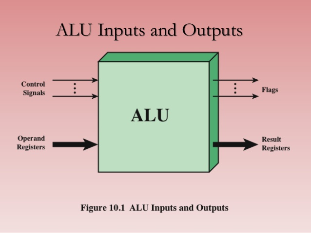

Es parte de la CPU, se la conoce como ALU por sus siglas en inglés de (arithmetic logic unit) en su interior tiene los circuitos digitales que realizan las operaciones aritméticas y lógicas, entre dos operandos, sobre esta muchas operaciones; realiza la resta, la multiplicación a través de sumas múltiples o con complementos, esto se realiza cargando los operando en el ACUMULADOR AC que recibe mediante el bus de datos.
Es necesario que se deba determinar en su interior las condiciones en las que son procesados los operandos, como si es negativo o positivo, si se ha desbordado la capacidad, con esta información se determinará cual será la decisión a tomar.

Las ALUs existen en todo circuito electrónico moderno, desde realizar incrementos de 1 al tiempo actual, en contadores de circuitos sencillos e incrementadores en calculadoras básicas, hasta las sofisticadas en los procesadores Phenom AMD II y Core i7 de Intel; en procesadores gráficos, tarjetas de sonido, lectores ópticos (CD) y televisores de alta definición en donde se ubican ALUs muy potentes. Los mainframes con muchos núcleos y estos con múltiples unidades de ejecución y cada una de ellas con su ALU.
"Von Neumann (1945) explicó que una ALU es un requisito fundamental para una computadora, porque tendrá que efectuar operaciones matemáticas básicas,por lo que creyó razonable, que una computadora tenga los circuitos especializados para realizar estas operaciones".
TERMINALES DE ALU
las Terminales de la ALU son
Entrada, los dos operandos con los datos o con números a ser procesados y la entrada de un código desde la unidad de Control con la información de que operación debe realizar,
Salida, la respuesta a computo de la operación y el notificador de la operación realizada.
Registros de estado, entradas y salidas con información de acarreo, overflow, división por cero y otras mas.
BUSES UTILIZADOS
EL DATA BUS.-(de entrada)lleva la información a la unidad aritmética para su procesamiento.
EL STATUS BUS.-(de salida) los resultados e información procesada en la ALU son transportados a la unidad de Control.
REGISTRO DE ESTADO.- la palabra binaria con los datos de trabajo de la ALU.
OPERACIONES EN ALU
-SIMPLES
ARITMÉTICAS operaciones que se realiza desde la más básica y que se incrementan de acuerdo al diseño y complejidad de esta unidad y pueden ser desde:
suma,resta,multiplicación y división
DESPLAZAMIENTO.- al mover palabras a izquierda o derecha; como las ejecutadas en operaciones con BITS por o para 2 (producto y división) y sus múltiplos. con circuitos biestables D y JK.
LÓGICAS.- mediante bits para determinar la situación de las condiciones y estás se realizan con las compuertas and or not,nand,nor,yes xor xnor y otras. estas son; inversión, conjunción, disyunción.
COMPARACIONES.- Para que pueda tomar decisiones entre 2 o mas opciones o saltos condicionados.
-COMPLEJAS
AVANZADAS.- de arquitectura muy compleja, tiene en su interior circuitos que realizan muchas operaciones, por tanto es muy rápida y costosa.
SEMIAVANZADAS.- tiene una arquitectura con circuitos de varias operaciones pero ya utiliza microcódigo para realizar en apoyo a las operaciones tiene velocidad menores a las avanzadas.
BASICAS .- Estas tienen un equilibrio en software y hardware, contienen circuitos que realizan operaciones en coma flotante, utilizan microcódigos y software para complementar las tareas.
ELEMENTALES.- Emulan la existencia del coprocesador, verifica la existencia o no de circuitos de cálculo o coprocesador matemático, proceso denominado emulación por software. Contiene los circuitos más simples pero es lenta en sus procesos.
SIMULADORES.- al no tener hardware y emulador, se tiene que realizar programas que con algoritmos realicen todas las operaciones desde las sumas pasando por raices hasta las mas avanzadas y se tiene para esto bibliotecas de software. Son muy lentas por toda la simulación que debe realizar.
DATOS PROCESADOS
ALU trabaja con números binarios, y para las restas el más efectivo es el complemento a dos por su simpleza; con el formato signo magnitud, y para números muy grandes se lo realiza con coma flotante que contiene mantisa, base y exponente.
COMPONENTES.- la alu contiene en su interior los circuitos que permiten realizar las operaciones y son: Circuito operacional, registros de entradas, registro de estados y buses de conexión interna y externa.
REGISTROS DE ALU
AC Accumulator Se emplean para almacenar operandos y resultados de operaciones de la ALU temporalmente
MQ: Multiplier Quotient .-Se emplean para almacenar operandos y resultados de operaciones de la ALU que no soporta el AC en forma temporal. Por ejemplo, el resultado de multiplicar dos números de 40 bits es un número de 80 bits; los 40 bits más significativos se almacenan en AC y los menos significativos se almacenan en MQ.
MBR Memory Buffer Register.- Contiene una palabra que debe ser almacenada en la memoria, o es usado para recibir una palabra procedente de la memoria. Interacciona con toda la computadora.